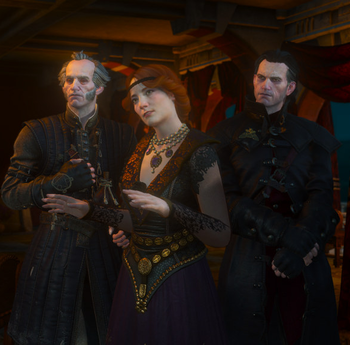
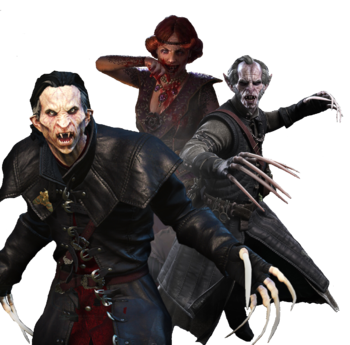

A bestiary is usually a volume containing information on different creatures, either living or mythical, depending on the focus of the treatise. Monsters can be broken down into distinct Classes, such as:
Witchers see monsters as things they must slay, often those that react to silver negatively are considered monsters. As well creatures of magical or dark origin are also normally considered to be monsters.
Some monsters are welcomed by humans and others due to their benefits, such as trolls whose ability to build and repair things make them valuable additions to rural societies.
Vampire
The moon shines bright,
The vampire alights
Swish, swish goes his cloak...
Maiden, are you not afeared?
- pg. 143 Baptism of Fire (UK edition)

Human Form

Vampire Form
Vampire is a hypernym used to refer to a number of creatures that thrive on blood, which contains their victims' life force.
Vampires in Sapkowski's works break with many popular stereotypes. In particular, vampire repellents such as holy water, crucifixes, garlic, wooden stakes, etc. are nothing but folklore within the Witcher saga. For example, Regis, the vampire who accompanies Geralt for a time, was once decapitated, staked through the heart, sprinkled with holy water and finally buried, but that did not prevent him from regenerating, albeit slowly.
A vampire, or upir, is a dead person brought to life by Chaos. Having lost its first life, a v. enjoys its second life during the night hours. It leaves its grave by the light of the moon and only under its light may it act, assailing sleeping maidens or young swains, who it wakes not, but whose blood it sucks.
"Don't scoff. You can't be a stranger to vampire bite marks. Ever come across a case of a vampire ripping its victim to shreds?"
"No. That never happens."
"In the case of higher vampires — never, I agree," Emiel Regis said softly. "From what I know alpors, moolas, bruxas and nosferats don't mutilate their victims. On the other hand, fleders and ekimmas are pretty brutal with their victims' remains."
The draconids are a quite numerous order—even proper dragons alone number at least half a dozen species. Both they and the lesser draconids have inhabited these lands from time immemorial, forming an important branch of our ecosystem. As human cities and villages grew, and grazing and farming lands expanded, collisions between territories inhabited by draconids and those inhabited by humans became increasingly frequent. These predators quickly learned that herds of cattle and swine are a readily accessible source of food, which, in turn, led to attempts to exterminate them by any means avaible.
Draconids is a diverse order of quasi-reptiles that often cause trouble to humanoid races.
While the creature most commonly associated with draconids is dragon, the most populous members of this order are actually the so-called lesser draconids, which include dracolizards (slyzards), forktails and wyverns. They may be easily confused with dragons, as they share scaly skin or armor made up of bony plates, bat wings, and reptilian maws, legs, and tails. They are smaller and less intelligent than dragons, and often possess atrophied forelegs, to the point that certain species have none at all.
Dragons, in turn, are larger, possess two pairs of well-developed legs, huge wings and tail, and obvious intelligence. However, mutations from this scheme exist.
Witchers see monsters as things they must slay, often those that react to silver negatively are considered monsters. s well creatures of magical or dark origin are also normally considered to be monsters. Some monsters are welcomed by humans and others due to their benefits, such as trolls whose ability to build and repair things make them valuable additions to rural societies.
A bestiary is usually a volume containing information on different creatures, either living or mythical, depending on the focus of the treatise. Monsters can be broken down into distinct Classes. These help to further discern differences and similarities between Creatures and Monsters.